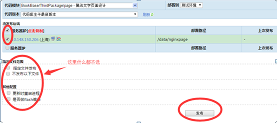

测试环境shell脚本发布svn地址：http://bj-scm.tencent.com/mqq/mqq_book_rep/book_proj/trunk/src/BookEventFront/tools
1、新建一个和webContent里同名的项目目录
2、拷贝一份publish.sh publish_test.sh 前者是正式环境配置 后者是测试环境配置 具体可参看其他文件夹
3、修改.sh文件里的目录 subpath 替换为当前文件夹目录
4、打开tools目录下的publish.sh publish_no_sync_test.sh添加配置
比如：sh act160902/adr/publish_test.sh
测试环境发布地址：http://dist.wsd.com/web/dist/other_dist.jsp?module=book/src/BookEventFront&type=test
安卓试环境访问地址：http://solomotest4.3g.qq.com/book_res/event/+文件夹名称+文件目录
ios测试环境访问地址：https://ptsolomo.reader.qq.com/book_res/event/+文件夹名称+文件目录
安卓测试环境pc端登录模拟:
使用ubook登录后在cookie里获取skey timi是qq号码
http://solomotest4.3g.qq.com/book_res/event/act160902/adr/index.html?tf=1&skey=@VcnluTVWo&timi=1922481934
ios测试环境pc端登录模拟:
使用ubook登录后在cookie里获取skey uin是qq号码
https://ptsolomo.reader.qq.com/book_res/event/act160902/ios/index.html?tf=1&skey=@zB0qHfnGp&uin=1922481934
安卓正式环境访问地址：http://iyuedu.qq.com/event/+文件夹名称+文件目录
ios正式环境访问地： https://yuedu.reader.qq.com/event/+文件夹名称+文件目录